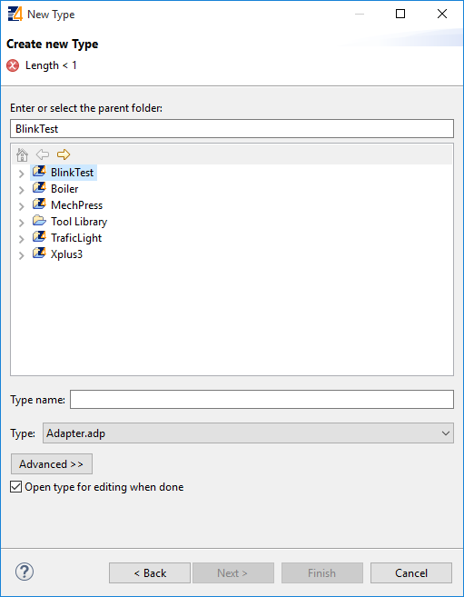
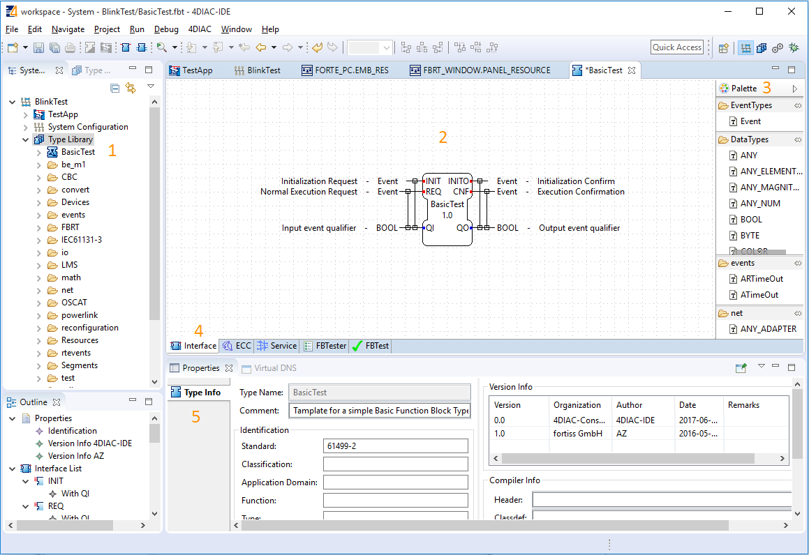
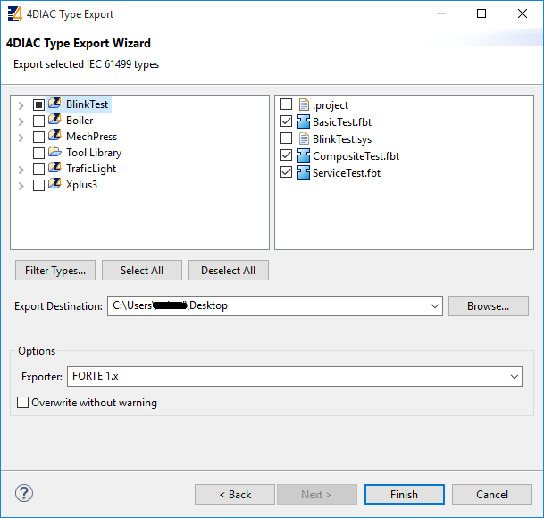
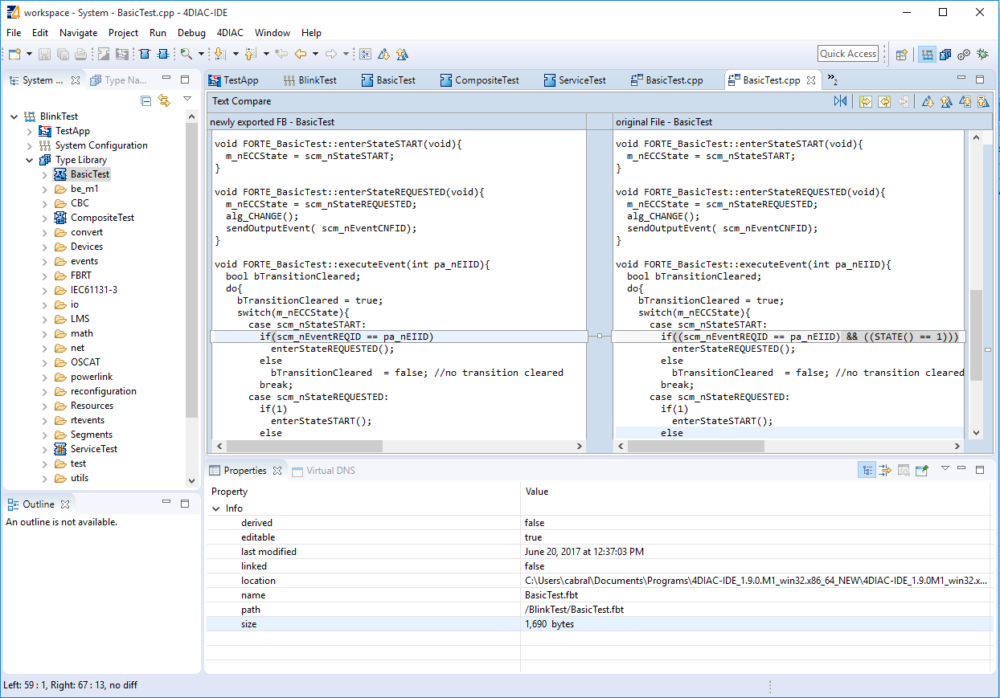

This page is part of a guide that gives a walkthrough over the major 4DIAC features.
This page will show how to create a Basic, a Composite and a Service Function Block. The new FBs are then available in the FB palette for use in the Systems' Applications. New function blocks need to be created when the needed functionality doesn't exist or multiple FBs should be combined into just one FB. First you have to define the interface with its input and output events and data. And then define the FB internals, which are defined by the kind of FB. We implement the Blinking functionality inside all three different FB types to introduce their creation process
To create new Function Block Types you have three options
In the wizard page, select BlinkTest as the parent folder. The name and the type will be selected according to which type of Function Block we are doing.
In the wizard page, choose a name for the type (we use BasicTest) and select Basic.fbt as Type Name, and click Finish. The Type Editor view is open.
In this example, we are doing a Blinking Function Block. This should have then one input Event that triggers the change, one output Event as an indicator of a change, and a output boolean Data for the state.
Select the ECC tab, and you will see a state-machine picture. This is the default one, and here's where you actually code the behavior of the Function Block. Lila boxes are states (double border is the initial one), the yellow ones represent the Algorithms that are executed when the Function Block enter the state, and the green ones are the triggered events after the algorithm. The arrows between them represent Events that arrives to the Function Block. They can have conditions. A "1" means that it will always change state after the algorithm. Events are consumed only one at a time. The small number at the beggining of the transition are the priorities, in case more than one transition is possible. Don't try to understand everything at once. With a little practice the terms and concepts become easier.
At the beginning, the FB is on the START state. When a REQ event arrives, it jumps to the REQUESTED state, execute algorithm CHANGE, triggers CNF output event, and then follows the 1 back to START. That's how the ECC works.
In case the transition with a "1" had also a REQ event, an infinite loop won't happen since the event is consumed only once. You would need to REQ events to go back.
Exporting the Function Block and testing are presented after the Composite and Service Function Block
Create a new Type as shown before. In the wizard page, choose a name for the type (we use CompositeTest) and select Basic.fbt as Type Name, and click Finish. The Type Editor view is open.
That's all you need to do for the Composite function block.
Create a new Type as shown before. In the wizard page, choose a name for the type (we use ServiceTest) and select ServiceInterface.fbt as Type Name, and click Finish. The Type Editor view is open.
The defatult interface of the Function Block looks different, but change it again and leave similar to the Basic and Composite examples.
That's it. The behavior of the Service Function Block must be implemented directly in the code that's generated from it. You will need to implement the functionality for each incomming event, manage the internal variables and send output events by yourself after exporting. Below you find the code for this example.
4DIAC-IDE provides an export filter to generate C++ code which can be included in the FORTE development process. In order to export a Function Block Type, select either
Before exporting one or more Function Block Types, the corresponding types and the output directory have to be chosen. Furthermore the version of the FORTE C++ format have to be selected. We'll export the three just created.
After pressing the Fnish-Button a dialog window will inform when the export to the FORTE C++ format was not successful. If the output directory already contains an older version of the exported Function Block Type it is possible to overwrite the old file or to open a Merge Editor where manual merges can be performed.
Now that you have exported the Service Function Block, you need to edit it in order to get the desired behavior. Open the ServiceTest.cpp file that was recently exported, and take a look at the executeEvent function at the bottom. You write there the toggling effect.
To get or set an internal variable or data input, in the FORTE template, you use the name and the parenthesis. The sendOutputEvent is the specific function to send output events.
Currently only the management (i.e. creation, deletion and modification) of Basic, Composite and Service Interface Function Block types as well as Adapter types is supported. The management of Device and Resource Types is currently not supported, Sub-applications are currently under development.
The FBTester tab is available for all Function Blocks. It allows to test the functionality of a Function Block by executing it on a target device. But first, FORTE must know about these FBs. So, you need to compile forte using these Function Block just created. The guide to compile FORTE is here. See the External Module section to add the files for compilation. Also, the CMake option FORTE_SUPPORT_MONITORING must be marked, which is the default value.
Once compiled, you can go to the FBTester, select FORTE Remote Tester in Test Configuration, and then set the IP and PORT for the FORTE that was compiled with the Function Blocks to be tested. The default is locally, but you can test them on any reachable FORTE.
Press Start Testing FB, and the FB will be load in FORTE, and you can manually set input values of your FB, trigger input events and inspect the resulting output events and output data. Furthermore you can store input/output sequences and execute them to automatically test a certain functionality of your FB.

In the next step you will see other basic features
If you want to go back to the distributed application running remotely, here's a link
If you want to go back to the Start Here page, we leave you here a fast access